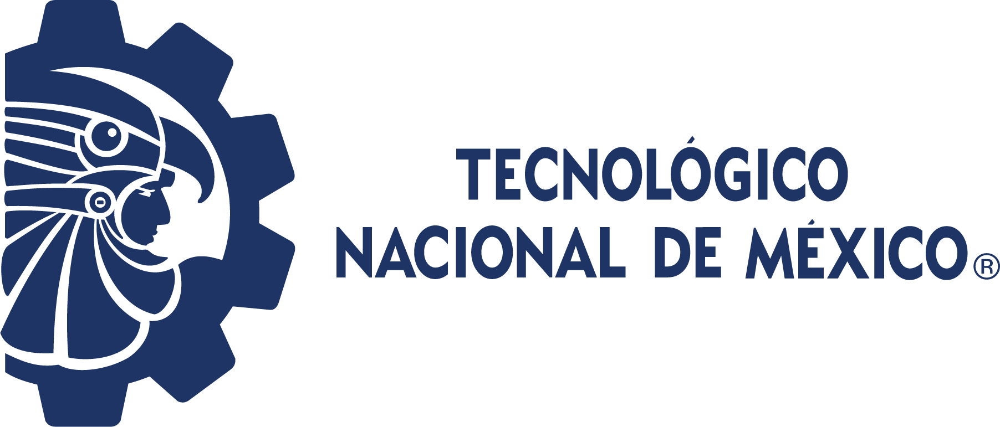
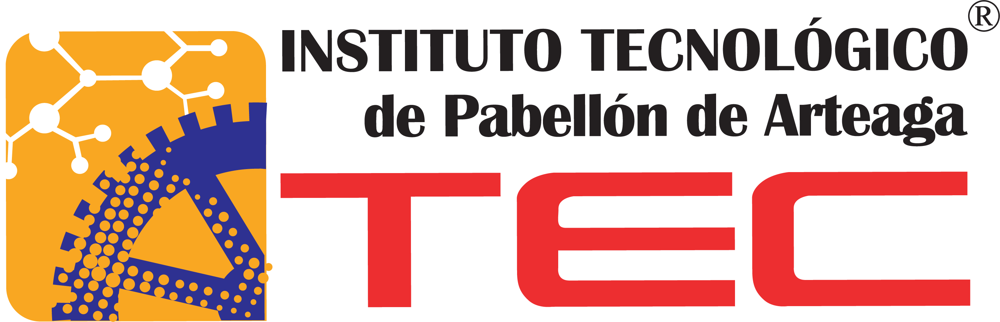
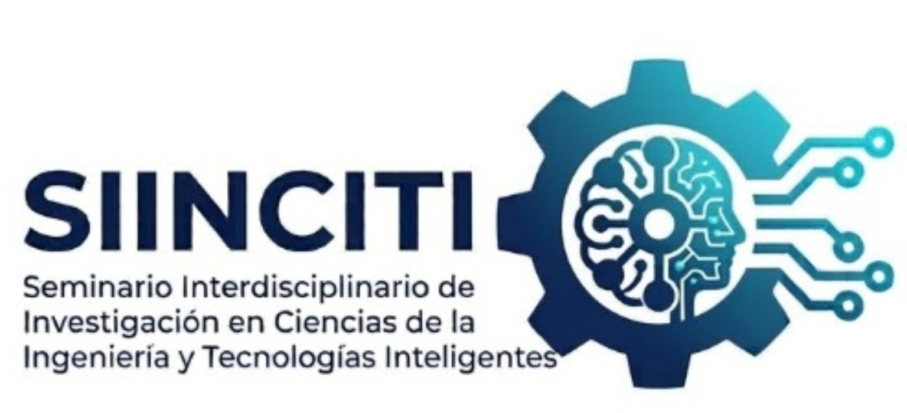

Registro y entrega de recuerdos
PoliforumCapítulo Estudiantil ITPA-IEEE.



CONOCIMIENTO QUE CONECTA DISCIPLINAS
Consulta los horarios, las actividades y las sedes de cada jornada del seminario.
Capítulo Estudiantil ITPA-IEEE.
Cierre del registro, acomodo de asistentes e introducción al evento.
Ing. Jaime Rodarte Martínez
Diseño y manufactura de prototipo de mezclado para el desarrollo de empaques biodegradables a base de fibra de Cocos nucifera L.
Maestría en Ciencias en Ingeniería MecatrónicaIng. Paulo André Jaime
Diseño y manufactura del módulo semiautomático de corte de pellets de plástico con energías alternativas integradas para una máquina extrusora híbrida.
Maestría en Ciencias en Ingeniería MecatrónicaDesayuno.
Por definir.
Presídium: autoridades del ITPA; autoridades gubernamentales y/o académicas; representantes de la iniciativa privada y otros invitados.
Recorrido de autoridades por la galería de proyectos.
Presentación y evaluación de proyectos académicos.
Por definir.
Fin de la presentación y evaluación de proyectos académicos. Cierre del día.
Capítulo Estudiantil IEEE.
Ing. Oscar Lenin Espinoza Álvarez
Implementación de una red neuronal y visión artificial para la detección automatizada de contaminantes en el cultivo de Pleurotus spp.
Maestría en Ciencias en Ingeniería MecatrónicaIng. Tania Lizbeth Montoya Lechuga
Diseño y pruebas funcionales de un biorreactor automatizado con monitoreo remoto para cultivo de hongos con prospección en aplicaciones de biotecnología ambiental.
Maestría en Ciencias en Ingeniería MecatrónicaDesayuno.
Por definir.
Sumorobot, seguidores de línea y videojuegos.
Por definir.
Fin de la presentación y evaluación de proyectos académicos. Cierre del día.
Capítulo Estudiantil IEEE.
Ing. Pedro Christian Calzada Alvarado
Diseño e implementación de una máquina de oxicorte móvil automatizada: control vectorial y modos de operación colaborativa (cobot) y de espejo.
Maestría en Ciencias en Ingeniería MecatrónicaIng. Julio César Rivera Rodríguez
Diseño mecánico y modelado dinámico de un exoesqueleto de extremidades inferiores: desarrollo y evaluación.
Maestría en Ciencias en Ingeniería MecatrónicaDesayuno.
Por definir.
Autoridades del ITPA.
Seis proyectos de investigación en materiales, automatización, biotecnología y sistemas mecánicos.
Ing. Jaime Rodarte Martínez
Maestría en Ciencias en Ingeniería MecatrónicaIng. Paulo André Jaime
Maestría en Ciencias en Ingeniería MecatrónicaIng. Oscar Lenin Espinoza Álvarez
Maestría en Ciencias en Ingeniería MecatrónicaIng. Tania Lizbeth Montoya Lechuga
Maestría en Ciencias en Ingeniería MecatrónicaIng. Pedro Christian Calzada Alvarado
Maestría en Ciencias en Ingeniería MecatrónicaIng. Julio César Rivera Rodríguez
Maestría en Ciencias en Ingeniería MecatrónicaParticipan Ingeniería Mecatrónica, Ingeniería en Tecnologías de la Información y Comunicaciones, Ingeniería en Inteligencia Artificial, Maestría en Ciencias en Ingeniería Mecatrónica y Doctorado en Ciencias de la Ingeniería.
Consultar el documento oficial ↗